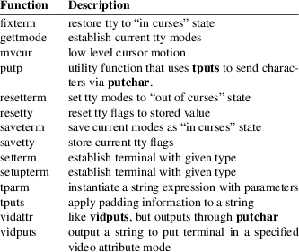
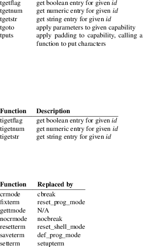
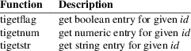
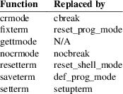

del_curterm, mvcur, putp, restartterm, set_curterm, setupterm, tigetflag, tigetnum, tigetstr, tiparm, tparm, tputs, vid_attr, vid_puts, vidattr, vidputs − curses interfaces to terminfo database
#include
<curses.h>
#include <term.h>
TERMINAL *cur_term;
const char *
const boolnames[];
const char * const boolcodes[];
const char * const boolfnames[];
const char * const numnames[];
const char * const numcodes[];
const char * const numfnames[];
const char * const strnames[];
const char * const strcodes[];
const char * const strfnames[];
int
setupterm(const char *term, int
filedes, int *errret);
TERMINAL *set_curterm(TERMINAL *nterm);
int del_curterm(TERMINAL *oterm);
int restartterm(const char *term, int
filedes, int *errret);
char
*tparm(const char *str, ...);
int tputs(const char *str, int
affcnt, int (*putc)(int));
int putp(const char *str);
int
vidputs(chtype attrs, int
(*putc)(int));
int vidattr(chtype attrs);
int vid_puts(attr_t attrs, short
pair, void *opts, int
(*putc)(int));
int vid_attr(attr_t attrs, short
pair, void *opts);
int mvcur(int oldrow, int oldcol, int newrow, int newcol);
int
tigetflag(const char *capname);
int tigetnum(const char *capname);
char *tigetstr(const char *capname);
char *tiparm(const char *str, ...);
These low-level routines must be called by programs that have to deal directly with the terminfo database to handle certain terminal capabilities, such as programming function keys. For all other functionality, curses routines are more suitable and their use is recommended.
None of these functions use (or are aware of) multibyte character strings such as UTF-8:
|
• |
capability names use the POSIX portable character set | ||
|
• |
capability string values have no associated encoding; they are strings of 8-bit characters. |
Initialization
Initially, setupterm should be called. The high-level
curses functions initscr and newterm call
setupterm to initialize the low-level set of
terminal-dependent variables [listed in
terminfo(5)].
Applications can use the terminal capabilities either directly (via header definitions), or by special functions. The header files curses.h and term.h should be included (in this order) to get the definitions for these strings, numbers, and flags.
The terminfo variables lines and columns are initialized by setupterm as follows:
|
• |
If use_env(FALSE) has been called, values for lines and columns specified in terminfo are used. | ||
|
• |
Otherwise, if the environment variables LINES and COLUMNS exist, their values are used. If these environment variables do not exist and the program is running in a window, the current window size is used. Otherwise, if the environment variables do not exist, the values for lines and columns specified in the terminfo database are used. |
Parameterized strings should be passed through tparm to instantiate them. All terminfo strings (including the output of tparm) should be printed with tputs or putp. Call reset_shell_mode to restore the tty modes before exiting [see curs_kernel(3X)].
Programs which use cursor addressing should
|
• |
output enter_ca_mode upon startup and |
|||
|
• |
output exit_ca_mode before exiting. |
Programs which execute shell subprocesses should
|
• |
call reset_shell_mode and output exit_ca_mode before the shell is called and | ||
|
• |
output enter_ca_mode and call reset_prog_mode after returning from the shell. |
The setupterm routine reads in the terminfo database, initializing the terminfo structures, but does not set up the output virtualization structures used by curses. These are its parameters:
|
term |
is the terminal type, a character string. If term is null, the environment variable TERM is used. |
filedes
is the file descriptor used for all output.
errret
points to an optional location where an error status can be returned to the caller. If errret is not null, then setupterm returns OK or ERR and stores a status value in the integer pointed to by errret. A return value of OK combined with status of 1 in errret is normal.
If ERR is returned, examine errret:
|
1 |
means that the terminal is hardcopy, cannot be used for curses applications. |
setupterm determines if the entry is a hardcopy type by checking the hc (hardcopy) capability.
|
0 |
means that the terminal could not be found, or that it is a generic type, having too little information for curses applications to run. |
setupterm determines if the entry is a generic type by checking the gn (generic) capability.
|
−1 |
means that the terminfo database could not be found. |
If errret is null, setupterm prints an error message upon finding an error and exits. Thus, the simplest call is:
setupterm((char *)0, 1, (int *)0);,
which uses all the defaults and sends the output to stdout.
The Terminal
State
The setupterm routine stores its information about
the terminal in a TERMINAL structure pointed to by
the global variable cur_term. If it detects an error,
or decides that the terminal is unsuitable (hardcopy or
generic), it discards this information, making it not
available to applications.
If setupterm is called repeatedly for the same terminal type, it will reuse the information. It maintains only one copy of a given terminal’s capabilities in memory. If it is called for different terminal types, setupterm allocates new storage for each set of terminal capabilities.
The set_curterm routine sets cur_term to nterm, and makes all of the terminfo boolean, numeric, and string variables use the values from nterm. It returns the old value of cur_term.
The del_curterm routine frees the space pointed to by oterm and makes it available for further use. If oterm is the same as cur_term, references to any of the terminfo boolean, numeric, and string variables thereafter may refer to invalid memory locations until another setupterm has been called.
The restartterm routine is similar to setupterm and initscr, except that it is called after restoring memory to a previous state (for example, when reloading a game saved as a core image dump). restartterm assumes that the windows and the input and output options are the same as when memory was saved, but the terminal type and baud rate may be different. Accordingly, restartterm saves various tty state bits, calls setupterm, and then restores the bits.
Formatting
Output
The tparm routine instantiates the string str
with parameters pi. A pointer is returned to the
result of str with the parameters applied.
Application developers should keep in mind these quirks of
the interface:
|
• |
Although tparm’s actual parameters may be integers or strings, the prototype expects long (integer) values. | ||
|
• |
Aside from the set_attributes (sgr) capability, most terminal capabilities require no more than one or two parameters. | ||
|
• |
Padding information is ignored by tparm; it is interpreted by tputs. | ||
|
• |
The capability string is null-terminated. Use “\200” where an ASCII NUL is needed in the output. |
tiparm is a newer form of tparm which uses <stdarg.h> rather than a fixed-parameter list. Its numeric parameters are integers (int) rather than longs.
Output
Functions
The tputs routine applies padding information (i.e.,
by interpreting marker embedded in the terminfo capability
such as “$<5>” as 5 milliseconds) to the
string str and outputs it:
|
• |
The str parameter must be a terminfo string variable or the return value from tparm, tiparm, tgetstr, or tgoto. |
The tgetstr and tgoto functions are part of the termcap interface, which happens to share this function name with the terminfo interface.
|
• |
affcnt is the number of lines affected, or 1 if not applicable. | ||
|
• |
putc is a putchar-like routine to which the characters are passed, one at a time. |
The putp routine calls tputs(str, 1, putchar). The output of putp always goes to stdout, rather than the filedes specified in setupterm.
The vidputs routine displays the string on the terminal in the video attribute mode attrs, which is any combination of the attributes listed in curses(3X). The characters are passed to the putchar-like routine putc.
The vidattr routine is like the vidputs routine, except that it outputs through putchar.
The vid_attr and vid_puts routines correspond to vidattr and vidputs, respectively. They use a set of arguments for representing the video attributes plus color, i.e.,
|
• |
attrs of type attr_t for the attributes and |
|||
|
• |
pair of type short for the color-pair number. |
The vid_attr and vid_puts routines are designed to use the attribute constants with the WA_ prefix.
X/Open Curses reserves the opts argument for future use, saying that applications must provide a null pointer for that argument. As an extension, this implementation allows opts to be used as a pointer to int, which overrides the pair (short) argument.
The mvcur routine provides low-level cursor motion. It takes effect immediately (rather than at the next refresh).
While putp and mvcur are low-level functions which do not use the high-level curses state, they are declared in <curses.h> because SystemV did this (see HISTORY).
Terminal
Capability Functions
The tigetflag, tigetnum and tigetstr
routines return the value of the capability corresponding to
the terminfo capname passed to them, such as
xenl. The capname for each capability is given
in the table column entitled capname code in the
capabilities section of terminfo(5).
These routines return special values to denote errors.
The tigetflag routine returns
|
−1 |
if capname is not a boolean capability, or | ||
|
0 |
if it is canceled or absent from the terminal description. |
The tigetnum routine returns
|
−2 |
if capname is not a numeric capability, or | ||
|
−1 |
if it is canceled or absent from the terminal description. |
The
tigetstr routine returns
(char *)−1
if capname is not a string capability, or
|
0 |
if it is canceled or absent from the terminal description. |
Terminal
Capability Names
These null-terminated arrays contain
|
• |
the short terminfo names (“codes”), |
|||
|
• |
the termcap names (“names”), and |
|||
|
• |
the long terminfo names (“fnames”) |
for each of the predefined terminfo variables:
const char
*boolnames[], *boolcodes[], *boolfnames[]
const char *numnames[], *numcodes[],
*numfnames[]
const char *strnames[], *strcodes[],
*strfnames[]
Releasing
Memory
Each successful call to setupterm allocates memory to
hold the terminal description. As a side-effect, it sets
cur_term to point to this memory. If an application
calls
del_curterm(cur_term);
the memory will be freed.
The formatting functions tparm and tiparm extend the storage allocated by setupterm:
|
• |
the “static” terminfo variables [a-z]. Before ncurses 6.3, those were shared by all screens. With ncurses 6.3, those are allocated per screen. See terminfo(5) for details. | ||
|
• |
to improve performance, ncurses 6.3 caches the result of analyzing terminfo strings for their parameter types. That is stored as a binary tree referenced from the TERMINAL structure. |
The higher-level initscr and newterm functions use setupterm. Normally they do not free this memory, but it is possible to do that using the delscreen(3X) function.
Routines that return an integer return ERR upon failure and OK (SVr4 only specifies “an integer value other than ERR”) upon successful completion, unless otherwise noted in the preceding routine descriptions.
Routines that return pointers always return NULL on error.
X/Open defines no error conditions. In this implementation
del_curterm
returns an error if its terminal parameter is null.
|
putp |
calls tputs, returning the same error-codes. |
restartterm
returns an error if the associated call to setupterm returns an error.
setupterm
returns an error if it cannot allocate enough memory, or create the initial windows (stdscr, curscr, newscr). Other error conditions are documented above.
tputs
returns an error if the string parameter is null. It does not detect I/O errors: X/Open states that tputs ignores the return value of the output function putc.
Compatibility
macros
This implementation provides a few macros for compatibility
with systems before SVr4 (see HISTORY). Those include
crmode, fixterm, gettmode,
nocrmode, resetterm, saveterm, and
setterm.
In SVr4, those are found in <curses.h>, but except for setterm, are likewise macros. The one function, setterm, is mentioned in the manual page. The manual page notes that the setterm routine was replaced by setupterm, stating that the call:
setupterm(term, 1, (int *)0)
provides the same functionality as setterm(term), and is not recommended for new programs. This implementation provides each of those symbols as macros for BSD compatibility,
SVr2 introduced the terminfo feature. Its programming manual mentioned these low-level functions:

The programming manual also mentioned functions provided for termcap compatibility (commenting that they “may go away at a later date”):

Early terminfo programs obtained capability values from the TERMINAL structure initialized by setupterm.
SVr3 extended terminfo by adding functions to retrieve capability values (like the termcap interface), and reusing tgoto and tputs:

SVr3 also replaced several of the SVr2 terminfo functions which had no counterpart in the termcap interface, documenting them as obsolete:

SVr3 kept the mvcur, vidattr and vidputs functions, along with putp, tparm and tputs. The latter were needed to support padding, and handling functions such as vidattr (which used more than the two parameters supported by tgoto).
SVr3 introduced the functions for switching between terminal descriptions, e.g., set_curterm. Some of that was incremental improvements to the SVr2 library:
|
• |
The TERMINAL type definition was introduced in SVr3.01, for the term structure provided in SVr2. | ||
|
• |
The various global variables such as boolnames were mentioned in the programming manual at this point, though the variables were provided in SVr2. |
SVr4 added the vid_attr and vid_puts functions.
There are other low-level functions declared in the curses header files on Unix systems, but none were documented. The functions marked “obsolete” remained in use by the Unix vi(1) editor.
Legacy
functions
X/Open notes that vidattr and vidputs may be
macros.
The function setterm is not described by X/Open and must be considered non-portable. All other functions are as described by X/Open.
Legacy data
setupterm copies the terminal name to the array
ttytype. This is not part of X/Open Curses, but is
assumed by some applications.
Other implementions may not declare the capability name arrays. Some provide them without declaring them. X/Open does not specify them.
Extended terminal capability names, e.g., as defined by tic −x, are not stored in the arrays described here.
Output
buffering
Older versions of ncurses assumed that the file
descriptor passed to setupterm from initscr or
newterm uses buffered I/O, and would write to the
corresponding stream. In addition to the limitation that the
terminal was left in block-buffered mode on exit (like
System V curses), it was problematic because ncurses
did not allow a reliable way to cleanup on receiving
SIGTSTP.
The current version (ncurses6) uses output buffers managed directly by ncurses. Some of the low-level functions described in this manual page write to the standard output. They are not signal-safe. The high-level functions in ncurses use alternate versions of these functions using the more reliable buffering scheme.
Function
prototypes
The X/Open Curses prototypes are based on the SVr4 curses
header declarations, which were defined at the same time the
C language was first standardized in the late 1980s.
|
• |
X/Open Curses uses const less effectively than a later design might, in some cases applying it needlessly to values are already constant, and in most cases overlooking parameters which normally would use const. Using constant parameters for functions which do not use const may prevent the program from compiling. On the other hand, writable strings are an obsolescent feature. |
As an extension, this implementation can be configured to change the function prototypes to use the const keyword. The ncurses ABI 6 enables this feature by default.
|
• |
X/Open Curses prototypes tparm with a fixed number of parameters, rather than a variable argument list. |
This implementation uses a variable argument list, but can be configured to use the fixed-parameter list. Portable applications should provide 9 parameters after the format; zeroes are fine for this purpose.
In response to review comments by Thomas E. Dickey, X/Open Curses Issue 7 proposed the tiparm function in mid-2009.
Special TERM
treatment
If configured to use the terminal-driver, e.g., for the
MinGW port,
|
• |
setupterm interprets a missing/empty TERM variable as the special value “unknown”. | ||
|
• |
setupterm allows explicit use of the the windows console driver by checking if $TERM is set to “#win32con” or an abbreviation of that string. |
Other
portability issues
In System V Release 4, set_curterm has an int
return type and returns OK or ERR. We have
chosen to implement the X/Open Curses semantics.
In System V Release 4, the third argument of tputs has the type int (*putc)(char).
At least one implementation of X/Open Curses (Solaris) returns a value other than OK/ERR from tputs. That returns the length of the string, and does no error-checking.
X/Open notes that after calling mvcur, the curses state may not match the actual terminal state, and that an application should touch and refresh the window before resuming normal curses calls. Both ncurses and System V Release 4 curses implement mvcur using the SCREEN data allocated in either initscr or newterm. So though it is documented as a terminfo function, mvcur is really a curses function which is not well specified.
X/Open states that the old location must be given for mvcur. This implementation allows the caller to use −1’s for the old ordinates. In that case, the old location is unknown.
curses(3X), curs_initscr(3X), curs_kernel(3X), curs_memleaks(3X), curs_termcap(3X), curs_variables(3X), term_variables(3X), putc(3), terminfo(5)